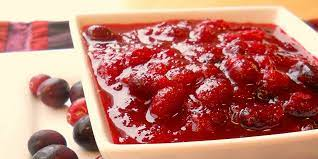

Cranberry Sauce

A pan full of delicious cranberry sauce
Cranberries are absolutely perfect with turkey. Sort of like lemons and chicken. Something about the flavors, they're just made for each other.
Which is why the sauce is so good to spread over turkey in your leftover turkey sandwiches.
Ingredients
- 1 cup (220g) sugar
- 1 cup (250ml) water
- 4 cups (one 12-ounce package
- Optional: Pecans, orange zest, raisins, currants, blueberries,
cinnamon, nutmeg, allspice
Instructions
- Place the cranberries in a colander and rinse them.
Pick out and discard any damaged or bruised cranberries.
- Put the water and sugar in a medium saucepan on high heat and bring to a boil.
Stir to dissolve the sugar.
- Add the cranberries to the pot and return to a boil.
Lower the heat and simmer for 10 minutes or until most of the cranberries have burst.
- Once the cranberries have burst you can leave the cranberry sauce as is, or dress it up with other ingredients.
I like to mix in a half a cup of chopped pecans a pinch or two of orange zest.
- Remove the pot from heat. Let cool completely at room temperature, then transfer to a bowl to chill in the refrigerator.
Note that the cranberry sauce will continue to thicken as it cools.
Return to mainpage